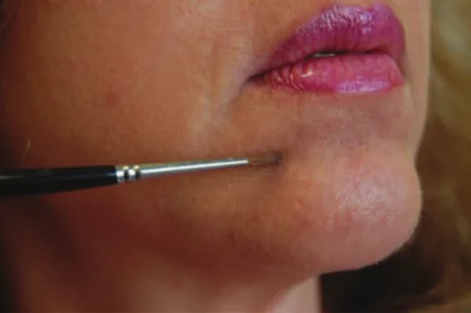
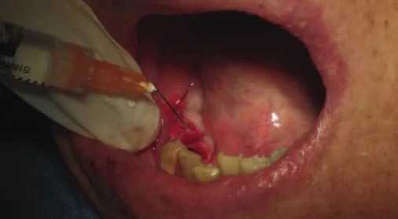

نسخه استخراجشده؛ ترجمه یا تأیید علمی انجام نشده است. وضعیت: captured
اولین گام روشن است: درمانگر ایمپلنت باید نخست با مپینگ ناحیهی نقص، تعیین کند که آیا نقص حسی وجود دارد یا نه.
چرا مپینگ پیش از هر درمانی؟ سه دلیل:
۱. بدون خط پایه، نمیتوانی بگویی بهتر شده یا بدتر — و کل طبقهبندی آسیب عصبی بر پایهی سیر زمانی بازیابی ساخته شده است.
۲. وسعت و مرز ناحیهی درگیر، اطلاعاتی دربارهی کدام عصب و کدام شاخه میدهد.
۳. این یک سند است. در وضعیتی که پیامدش میتواند دائمی باشد، مستندسازی از روز اول اهمیت حقوقی دارد.
برنامهی پیگیری: معمولاً پس از ویزیت یکهفتهای پس از عمل، بیماران هر ۲ هفته ویزیت میشوند و نقصها مپ و مستند میگردند.
این فاصلهی دوهفتهای اتفاقی نیست: بهاندازهای کوتاه است که تغییر روند را ببینی، و بهاندازهای بلند که تغییری برای دیدن رخ داده باشد.
و تفسیر آنچه میبینی: به یاد بیاور که در ابتدا بیحسی کامل شایعترین حالت است و سپس پارستزی با شروع بهبود ظاهر میشود. پس گزارش بیمار از سوزنسوزن شدن در ویزیت دوم، برخلاف تصور اولیه، خبر خوبی است.
و بازههای انتظار که باید با بیمار در میان بگذاری: در آکسونوتمزیس، بهبود نقص حسی ظرف حدود ۲ تا ۴ ماه و بازیابی کامل معمولاً ظرف ۱۲ ماه.
اما همین را با تقویم بحران کنار هم بگذار: پس از ۳ ماه تغییرات دائمی رخ میدهد که پاسخ به مداخلهی جراحی را بعید میکند. یعنی پنجرهی تصمیم دربارهی ارجاع، بسیار کوتاهتر از پنجرهی بهبود خودبهخودی است.
معیار ارجاع فوری: در موارد دیساستزی، بیحسی، یا قطع شناختهشدهی عصب، مداخلهی جراحی سریع ممکن است بهترین شانس بازیابی حسی را فراهم کند. و در نوروتمزیس، ارجاع فوری برای ارزیابی نوروسرجری توصیه شده است. اگر هم تا حدود هفتهی هشتم هیچ نشانهای از بهبود دیده نشد، ارجاع به جراح فک و صورت یا میکرونوروسرجن لازم است.

چرا اصلاً دارو؟ مکانیسمش این است: واسطههای التهابی با فعال کردن نورونها و نوسیسپتورهایشان به توسعهی ترومای عصبی کمک میکنند. پس در هر نوع اختلال عصبی، کورتیکواستروئید یا ضدالتهاب غیراستروئیدی باید فوراً به کار رود.
کلمهی «فوراً» را با تقویم بحران کنار هم بگذار: آتروفی فیبر عصبی با ترومای بیش از ۶ ساعت نشان داده شده است.
پروتکل دگزامتازون — سه سناریوی مشخص:
۱. حین جراحی، اگر کشش یا فشردگی شناختهشدهی تنهی عصب رخ داده باشد: کاربرد موضعی دگزامتازون برای به حداقل رساندن نقصها.
۲. هنگام برداشتن ایمپلنتی که به کانال مندیبولار تجاوز کرده: ۱ تا ۲ میلیلیتر از فرم وریدی دگزامتازون (۴ میلیگرم بر میلیلیتر) بهصورت موضعی اعمال میشود.
۳. اگر ایمپلنت به عصب نزدیک است: برداشتن یا جابهجایی اقدام اول است، نه گزینهی آخر. ولی عقب کشیدن ایمپلنت همیشه فشار هماتوم یا استخوان خردشده را برطرف نمیکند و ممکن است ایمپلنت را بیش از حد کرونال بگذارد؛ در این موارد ایمپلنت برداشته و محل استئوتومی با ۱ تا ۲ میلیلیتر همان دگزامتازون ۴ mg/mL شستوشو میشود.
چرا دگزامتازون و نه استروئید دیگر؟ بهطور اختصاصی بهدلیل اثرات ضدالتهابی بیشترش در مقایسه با متیلپردنیزولون یا پردنیزون توصیه میشود.
و دو یافتهی تکمیلی:
• مطالعات نشان دادهاند تجویز استروئید میتواند تشکیل نوروما را به حداقل برساند — بهویژه دوزهای بالا در هفتهی اول پس از آسیب عصبی.
• مطالعات هیچ موربیدیتیای برای کاربرد موضعی گلوکوکورتیکوئید در محل آسیب نشان ندادهاند و بازیابی پس از جراحی بهطور معنادار بهبود یافته است.
NSAID — و یک تمایز فارماکولوژیک که اغلب اشتباه فهمیده میشود:
NSAIDها برای اثر ضدالتهابی سقف اثر (ceiling effect) ندارند — در حالی که سقف اثر ضددردیشان ۴۰۰ میلیگرم است. یعنی افزایش دوز فراتر از ۴۰۰ میلیگرم درد را بیشتر کم نمیکند ولی التهاب را بیشتر کم میکند.
اما بلافاصله یک هشدار: دوزهای بالاتر برای رسیدن به خواص ضدالتهابی با عوارض جانبی جدی همراهاند. توصیهی استاندارد برای پروسیجرهای نوع ۱ تا ۴: ایبوپروفن ۴۰۰ میلیگرم.
و یک قاعدهی مهم دربارهی محل آسیبدیده: هیچ پیوند استخوانی یا ایمپلنتی نباید گذاشته شود که ممکن است فیبرهای عصبی ترومادیده را تحریک کند.
یعنی پس از آسیب عصبی، وسوسهی «درستش میکنم و ادامه میدهم» باید کنار گذاشته شود. محل باید آرام بماند.

نوع سؤال: ساخت کلمه · 5 خانه
حروف منبع: س · ت · ن · م · د